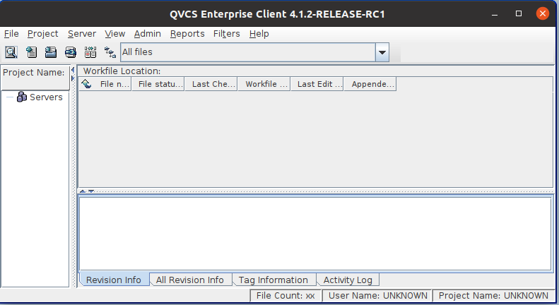
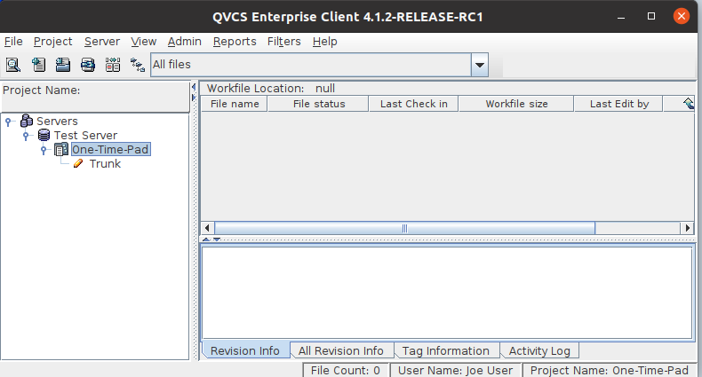

|
QVCS Enterprise Tutorial: Client Application BasicsContents
Defining the ServerUnless you're running the instance of the client application installed along with the server application, the client application will not automatically detect the server. Instead, the project pane of the window will be empty and you will be required to define a server.  To define a server, right click on the "Servers" node and select the Add Server... option from the context menu. Doing so will bring up the following dialog: You will need to define a name for your server (it does not have to match whatever name the server was given when defined in the Admin application), and identify the IP address of the machine running the server. Once you click OK, the new server node will appear below the Servers icon in the project pane. Clicking on your newly defined server will bring up a login dialog. Once you've supplied a valid username and password (these should have been defined for you by the Admin), you will be logged into the server, and the client will display any projects to which you have access. Clicking on a project will expand it to show the trunk and any views that may have been defined.  If you click on either the trunk or any views, the client will prompt you to define the location of your work files. This is the top directory where you will store your own copies of the files in a project. Any time you perform a Get operation on a file under version control, the client will retrieve the file information from the server and save a copy of the file to your defined workfile location, potentially updating any pre-existing copy. Conversely, when you make changes to your work files, QVCS can read them in and store them as a new revision in its archives. For the sake of this tutorial, you just need to be sure to define a directory with a few existing files that you can play around with. (If you select a temporary test location, your work file location can be redefined at a later time by right clicking on the trunk and selecting Define View Properties... from the context menu.) Now that you've set up your client application to view your project, you can start using Enterprise's version control tools to manage your files. « Previous - Next » |
| © Copyright 2004-2010 Quma Software, Inc. All Rights Reserved. |